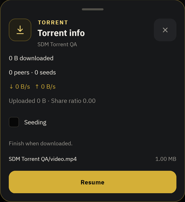
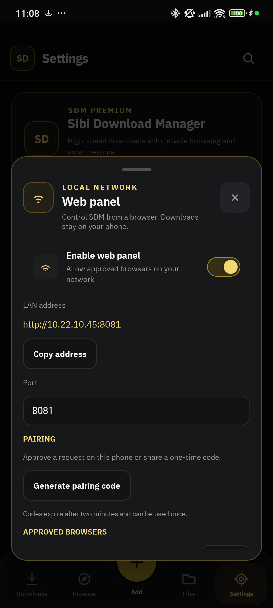
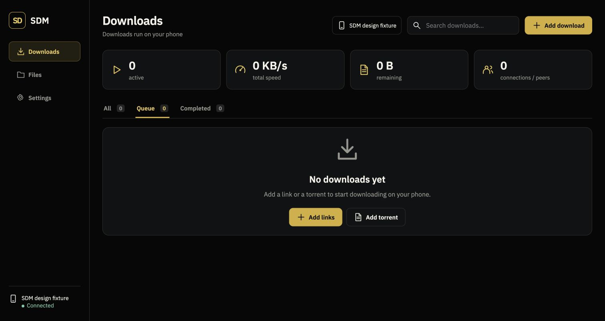
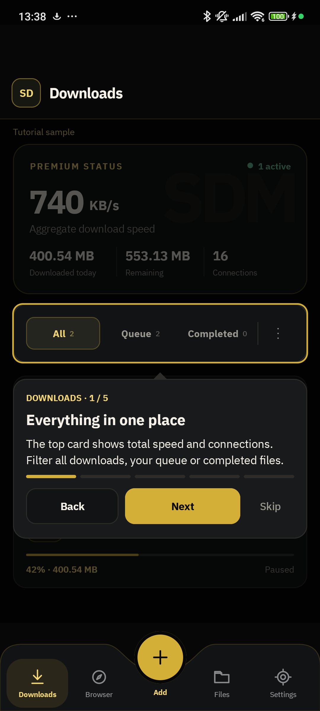

01 / BUILT IN
↗Torrents. Included.
Pick your content and manage seeding
right inside SDM.

Links, torrents, and a little more control.
All on your phone.

Open the web panel on your local network.
Approve on your phone. Take control.

Real screens. Useful tools.
No extra apps required.
Pick your content and manage seeding
right inside SDM.

A hands-on tour walks you through
your first steps.

Explore the real SDM web panel.
Everything you need for the download,
and everything that comes after.
Paste one link or a whole list. HTTP and HTTPS, with parallel connections when the server supports them.
Stop when you need to. Continue from saved progress when the source supports resuming.
Choose what goes first, reorder your queue, and control how many downloads run together.
Set a start time or a daily download window to fit your routine.
Set global and per-download limits. Adjust connection counts to suit your network.
Choose retry count and delay for temporary failures, with controls during the countdown.
Replace an expired URL and continue a resumable download without throwing away its progress.
Browse normal or private tabs and pass eligible authenticated downloads straight to SDM.
An embedded torrent engine with file selection, peer information and seeding controls.
Find your saved files, rename, move, open or share them, and verify checksums.
Import or export links and back up your queue and settings for later restoration.
Manage downloads, files and settings on your local network. Approve and revoke browsers on your phone.
Route file categories to your chosen folders automatically.
Rename your save folder while preserving existing files and download progress.
Choose Wi-Fi-only downloads and apply network-specific speed limits.
Resume eligible interrupted downloads when connectivity returns, while respecting manual pauses.
Keep transfers running in the background and control them from notifications.
See live speed history, connections and progress, with completion and stalled-transfer notifications.
SDM 0.2.80 · Android 8.0+ · APK download